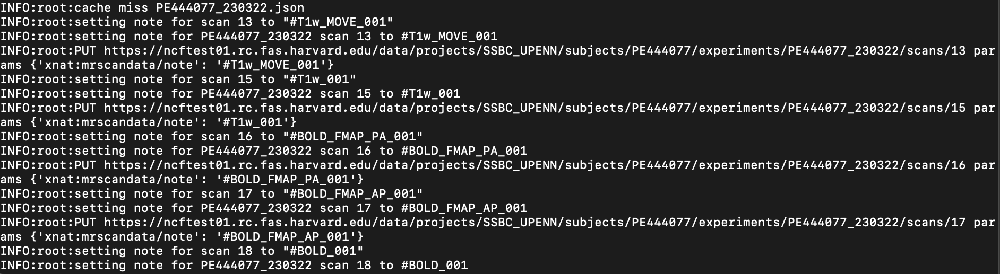
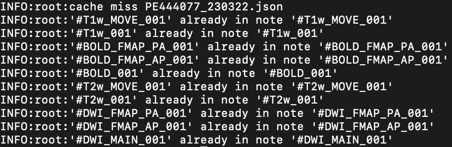

xnattagger Documentation
xnattagger is a python command line tool that labels or “tags” scans within an XNAT instance according to user specifications.
Possible Tagging Convention Overview
“Tagging” refers to adding notes to your scans’ notes field in XNAT. The example below shows the tags that could be added to the notes field for each of the different modalities using xnattagger along with some example series names for each modality.
Type |
Example series |
Tag Being Inserted Into Note Field |
|---|---|---|
DWI |
|
|
DWI_PA_FMAP |
|
|
DWI_AP_FMAP |
|
|
DWI_REVPOL |
|
|
BOLD |
|
|
BOLD_PA |
|
|
BOLD_AP |
|
|
T1w |
|
|
T1w_MOVE |
|
|
T2w |
|
|
T2w_MOVE |
|
|
The image below displays an MR Session report page with populated notes.
Note
If a DWI scan has corresponding PA and AP scans, they should be assigned matching numbers. For example, #DWI_MAIN_001 would correspond to #DWI_PA_001 and #DWI_AP_001. Some diffusion studies will not have dedicated fieldmaps and will use reverse polarity (“revpol”) acquisitions instead. Since these “revpol” scans can be applied to several “main” diffusion scans, it is recommended that they be grouped in an an identifiable way. For example, adding a letter to the tag. See this explanation for further details. The config file below also can serve as an example.
Installation
Install xnattagger via pip:
pip install xnattagger
Verify that it installed sucessfully:
pip show xnattagger
Configuring xnattagger
tagger.yaml file
In order for xnattagger to work properly, it has to know what it’s looking for as it parses information about the scans. Particularly, it needs to know the series name and image type that correspond to the different scans and modalities. That’s where the tagger.yaml config file comes in. Take a look at the example below (download). Notice that each modality has a series description, image type and tag associated with it.
Note
Each modality/scan type can have several series_description and image_type fields that it tries to match to. In the example below, all three of the diffusion scan types have two sets of series_description and image_type fields. This means that xnattagger will tag diffusion scans that match either of those descriptions/scan types. If you have different series descriptions across projects/sites, you can catch and tag them all this way. The tag field is completely customizable. Whatever you put there will be inserted into the notes field on XNAT.
t1w:
- series_description: ABCD_T1w_MPR_vNav
image_type: [ORIGINAL, PRIMARY, M, ND, NORM]
tag: '#T1w'
t1w_move:
- series_description: ABCD_T1w_MPR_vNav_setter
image_type: [ORIGINAL, PRIMARY, M, ND, MOSAIC]
tag: '#T1w_MOVE'
t2w:
- series_description: ABCD_T2w_SPC_vNav
image_type: [ORIGINAL, PRIMARY, M, ND, NORM]
tag: '#T2w'
t2w_move:
- series_description: ABCD_T2w_SPC_vNav_setter
image_type: [ORIGINAL, PRIMARY, M, ND, MOSAIC]
tag: '#T2w_MOVE'
dwi:
- series_description: CMRR_DiffAP_2mm_20dir_Set1
image_type: [ORIGINAL, PRIMARY, DIFFUSION, NONE, MB, ND, MOSAIC]
tag: '#DWI_MAIN_A_001'
- series_description: CMRR_DiffAP_2mm_20dir_Set2
image_type: [ORIGINAL, PRIMARY, DIFFUSION, NONE, MB, ND, MOSAIC]
tag: '#DWI_MAIN_A_002'
- series_description: CMRR_DiffAP_2mm_20dir_Set3
image_type: [ORIGINAL, PRIMARY, DIFFUSION, NONE, MB, ND, MOSAIC]
tag: '#DWI_MAIN_B_001'
- series_description: CMRR_DiffAP_2mm_20dir_Set4
image_type: [ORIGINAL, PRIMARY, DIFFUSION, NONE, MB, ND, MOSAIC]
tag: '#DWI_MAIN_B_002'
- series_description: Axial MB DTI PA (MSV21)
image_type: [ORIGINAL, PRIMARY, DIFFUSION, NONE, ND, NORM, MOSAIC]
tag: '#DWI_MAIN_C_001'
revpol:
- series_description: CMRR_DiffPA_2mm_4b0
image_type: [ORIGINAL, PRIMARY, M, MB, ND]
note: 'DIFF_2.0_4B0_Set12'
tag: '#DWI_REVPOL_A_001'
- series_description: CMRR_DiffPA_2mm_4b0
image_type: [ORIGINAL, PRIMARY, M, MB, ND]
note: DIFF_2.0_4B0_Set34
tag: '#DWI_REVPOL_B_001'
- series_description: Axial MB DTI AP (MSV21)
image_type: [ORIGINAL, PRIMARY, DIFFUSION, NONE, ND, NORM, MOSAIC]
tag: '#DWI_REVPOL_C_001'
dwi_PA:
- series_description: ABCD_dMRI_DistortionMap_PA
image_type: [ORIGINAL, PRIMARY, DIFFUSION, NONE, ND]
tag: '#DWI_FMAP_PA'
- series_description: UKbioDiff_ABCDseq_DistMap_PA
image_type: [ORIGINAL, PRIMARY, DIFFUSION, NONE, ND]
tag: '#DWI_FMAP_PA'
dwi_AP:
- series_description: ABCD_dMRI_DistortionMap_AP
image_type: [ORIGINAL, PRIMARY, DIFFUSION, NONE, ND]
tag: '#DWI_FMAP_AP'
- series_description: UKbioDiff_ABCDseq_DistMap_AP
image_type: [ORIGINAL, PRIMARY, DIFFUSION, NONE, ND]
tag: '#DWI_FMAP_AP'
bold:
- series_description: ABCD_fMRI_rest_noPMU
image_type: [ORIGINAL, PRIMARY, M, ND, MOSAIC]
tag: '#BOLD'
bold_PA:
- series_description: ABCD_fMRI_DistortionMap_PA
image_type: [ORIGINAL, PRIMARY, M, ND]
tag: '#BOLD_FMAP_PA'
bold_AP:
- series_description: ABCD_fMRI_DistortionMap_AP
image_type: [ORIGINAL, PRIMARY, M, ND]
tag: '#BOLD_FMAP_AP'
XNAT Scan Type
You can find the series description and image type information in your XNAT instance.
Let’s look at the diffusion acquisition as an example. Notice that the series_description in the tagger.yaml file above matches the Scan Type column in XNAT and the image_type in tagger.yaml matches the Image Type in XNAT. Be sure to follow the same tokenizing convention when copying the Image Type from XNAT to the image_type in tagger.yaml. The “\” should be replaced with a comma and a space. Here is how we would convert the information form XNAT to yaml format using our diffusion example:
XNAT |
tagger.yaml |
|---|---|
Scan Type: ABCD_dMRI_lowSR |
series_description: ABCD_dMRI_lowSR |
Image Type: ORIGINAL\PRIMARY\DIFFUSION\NONE\ND\MOSAIC |
image_type: [ORIGINAL, PRIMARY, DIFFUSION, NONE, ND, MOSAIC] |
Follow the same convention for all your modalities and you will be good to go!
Running xnattagger
Required Arguments
xnattagger requires three arguments: 1) —label 2) —target-modality 3) —xnat-alias 4) —config
--label refers to the XNAT MR Session ID, which is found under XNAT PROJECT —> SUBJECT —> MR_SESSION--target-modality refers to which modalities you want to tag. This argument may be one of the following: dwi, t1, t2, bold, all--target-modality {dwi, t1, t2, bold, all}
--xnat-alias is the alias containing credentials associated with your XNAT instance. It can be created in a few steps with yaxil.--config is the absolute path to the tagger.yaml file you created, or downloaded, above.Executing the Command
Command Template:
xnat_tagger.py --label <MR_SESSION> target-modality <MODALITY> --xnat-alias <ALIAS> --config <PATH_TO_CONFIG_FILE>
Command Example:
xnat_tagger.py --label PE201222_230719 --target-modality all --xnat-alias ssbc --config /home/nrg/tagger.yaml
Expected Output
Your terminal output should look something like this:
If your tag already exists in the notes field on XNAT, you’ll get a terminal message that looks something like this:
Common Errors
Many errors tend to stem from mis-formatting the tagger.yaml file. Learn about yaml here. Follow the example given above closely!
Advanced Usage
If you would like to see what tags will be uploaded to XNAT without actually doing it, pass the --dry-run argument. You will also have to specify an output json file: -o test.json. That json file will contain metadata about the tags xnattagger mode would upsert. This can be useful for testing/debugging.
All Arguments
Argument |
Description |
Required |
|---|---|---|
|
XNAT Session Label |
Yes |
|
Modality to tag |
Yes |
|
Alias for XNAT Project |
Yes |
|
Configuration file for tagging scans |
Yes |
|
Project Name |
No |
|
User confirms each tag |
No |
|
Generate list of to-be-downloaded scans |
No |
|
Path to |
No |
Scripting for xnattagger
You can tag scans for all the subjects and projects in your XNAT instance through a combination of yaxil, xnattagger and the XNAT REST API. The example below (written in python) assumes that you’ve created an xnat alias (auth in the example) using yaxil and that your instance has three projects named: Michigan, Kansas and UCSD
import yaxil
import subprocess
projects = ["Michigan", "Kansas", "UCSD"]
with yaxil.session(auth) as sess:
for project in projects:
for subject in sess.subjects(project=project):
for experiment in sess.experiments(subject=subject):
tagger = f'xnat_tagger.py --alias example --config /home/nrg/tagging.yaml --target-modality all --label {experiment}'
proc1 = subprocess.Popen(tagger, shell=True, stdout=subprocess.PIPE)
proc1.communicate()
And that’s it! Contact info@neuroinfo.org with any questions or suggestions.